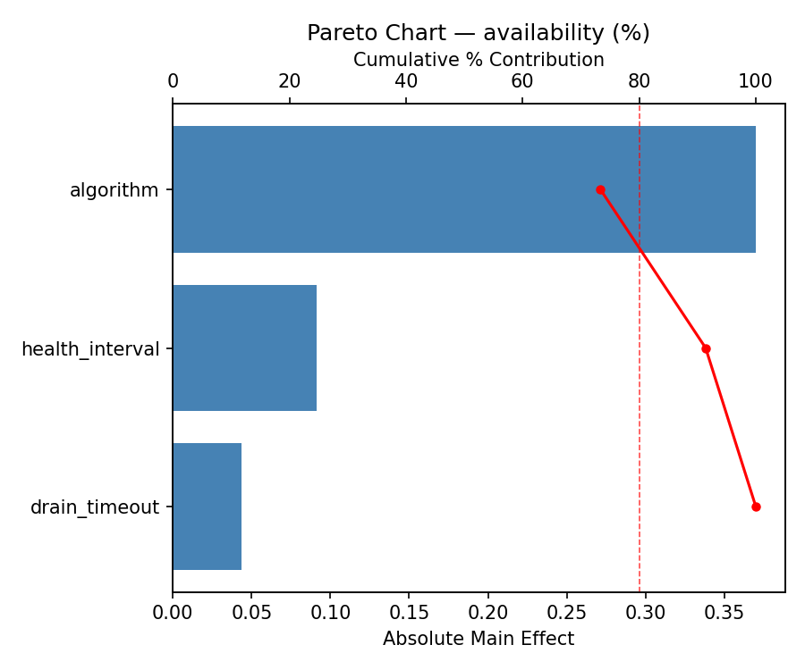
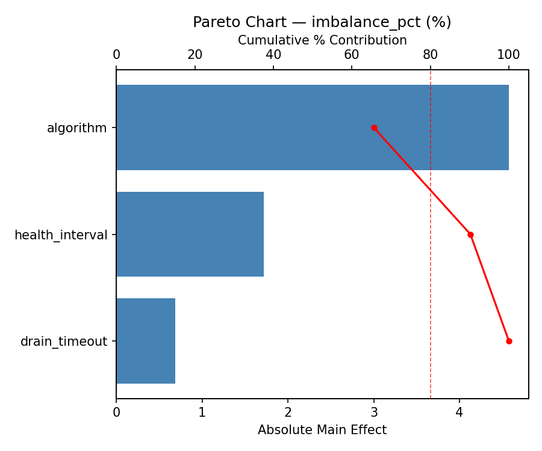
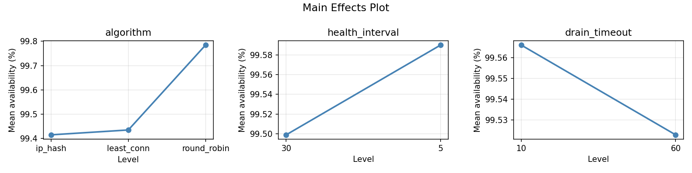
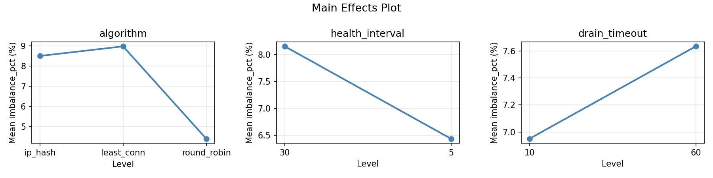
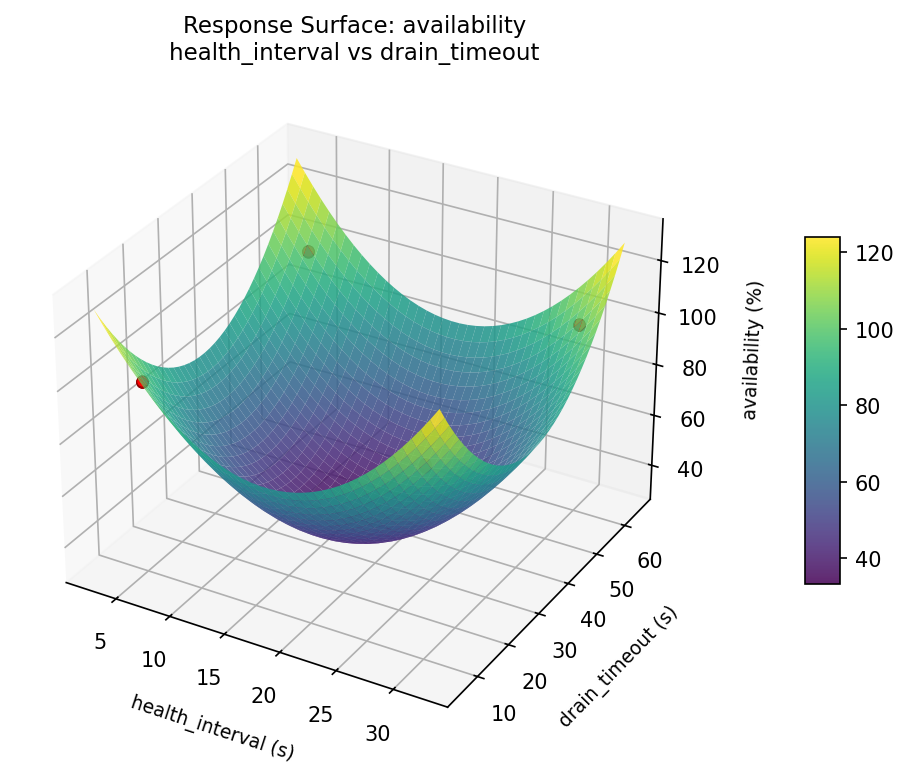
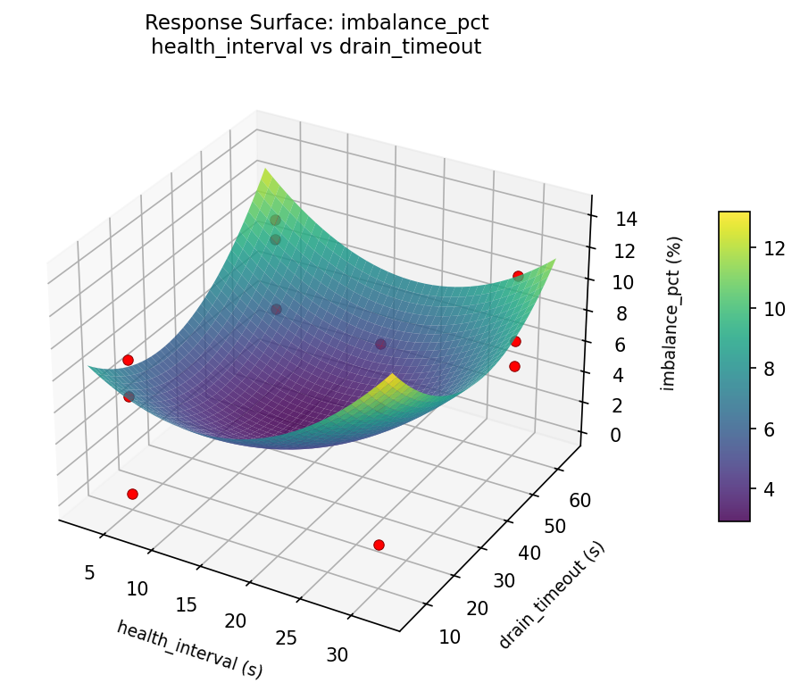

Full factorial of balancing algorithm, health check interval, and connection draining for availability
| Factor | Low | High | Unit |
|---|---|---|---|
algorithm | round_robin | ip_hash | |
health_interval | 5 | 30 | s |
drain_timeout | 10 | 60 | s |
Fixed: backend_count = 4, protocol = http2
| Response | Direction | Unit |
|---|---|---|
availability | ↑ maximize | % |
imbalance_pct | ↓ minimize | % |
| Feature | Value |
|---|---|
| Design type | full_factorial |
| Factor types | categorical, continuous |
| Arg style | double-dash |
| Responses | 2 (availability ↑, imbalance_pct ↓) |
| Total runs | 12 |
Generated from actual experiment runs using the DOE Helper Tool.
pareto availability

pareto imbalance pct

main effects availability

main effects imbalance pct

rsm availability health interval vs drain timeout

rsm imbalance pct health interval vs drain timeout
